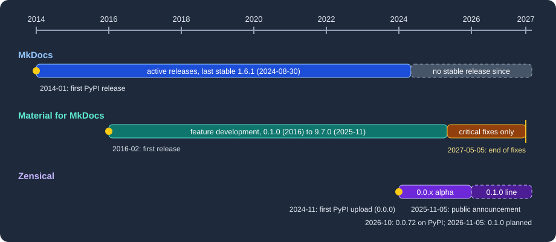

Zensical Overview
|
This content was generated with the assistance of AI and should be verified against the official documentation before being relied on in production. |
This page was written against Zensical 0.0.72 (the latest release on PyPI, published on 2026-10-23) and checked on 2026-10-26. Zensical is a static site generator for technical documentation written in Markdown. It is built by the team behind Material for MkDocs, and it is the tool the rest of this subsection describes. This page explains where it comes from, how healthy its predecessors are, what its alpha status means in practice and which commercial products sit around the open source core.
What Zensical is and why it exists
Zensical turns a folder of Markdown files and one configuration file into a static website: navigation, a built-in
client-side search, light and dark colour schemes, code highlighting, admonitions, diagrams and a responsive layout. It is
installed as a Python package (it requires Python 3.11 or later), reads either its own zensical.toml or an existing
mkdocs.yml, and builds with the command zensical build.
The team states two motivations in its announcement. First, Material for MkDocs had reached limits that were rooted in the architecture of MkDocs, its host program, so they could not be fixed from inside a theme. Second, MkDocs has not had a stable release since August 2024, which the team calls a supply chain risk for projects that depend on it. Rather than fork or port MkDocs, the team rebuilt static site generation from scratch, around a differential build engine named ZRX (a standalone open source project) that handles incremental builds, caching and data flow. The announcement does not say which language ZRX is written in, so this page does not either.
The generated HTML intentionally stays close to what Material for MkDocs produced, and Zensical keeps using Python Markdown and its extensions. That is why most existing Markdown, template overrides and custom CSS or JavaScript should carry over unchanged. Plugins are the exception: a planned module system will replace the MkDocs plugin model, and today only a subset of plugins is supported (see Blog, Tags and Plugins).
History: MkDocs, Material for MkDocs, Zensical
The three projects form one lineage, shown in the timeline.

Figure: first releases and status changes of MkDocs, Material for MkDocs and Zensical. Dates come from the PyPI release history and the official announcements.
| Project | Milestones | Status on 2026-10-26 |
|---|---|---|
MkDocs |
First PyPI release 0.2 on 2014-01-21; 1.6.1 on 2024-08-30. |
No stable release since 1.6.1. PyPI also lists 2.0 development pre-releases; the team behind Zensical recommends reading its separate article about MkDocs 2.0 before deciding on next steps. |
Material for MkDocs |
First PyPI release 0.1.0 on 2016-02-09; version 9.0.0 on 2023-01-02; 9.7.0 on 2025-11-11. |
Maintenance mode; the latest release on PyPI is 9.8.0 (2026-10-24). Feature development has ended. |
Zensical |
First upload to PyPI (0.0.0) on 2024-11-25; public announcement on 2025-11-05; 0.0.72 on 2026-10-23. |
Alpha (PyPI classifier |
The dates in the table were read from the PyPI release metadata of each package (mkdocs, mkdocs-material, zensical)
on 2026-10-26.
Maintenance status of the predecessors
Material for MkDocs is in maintenance mode. The team announced on 2025-11-05 that feature development had ended, and that critical bug fixes and security fixes would continue for twelve months. At the launch of the 0.1.0 line, scheduled for 2026-11-05 the team extended that period by six months, so critical maintenance now runs until 2027-05-05. After that date existing installations and already published sites keep working, but nothing is promised for new problems. The announcement does not name a Material for MkDocs version that marks the start of maintenance mode. The 9.7.0 release appeared on PyPI six days after the announcement, so it is a convenient reference point, but the official sources only give the dates.
MkDocs itself is described by the Zensical team as unmaintained since August 2024. Its last stable release is 1.6.1 from 2024-08-30. Whatever you think of that judgement, it is relevant for planning: a documentation site built on Material for MkDocs still depends on MkDocs for the build, and both are on a path of critical fixes only.
In practice this gives three choices for an existing Material for MkDocs site: stay on 9.x until 2027-05-05 and plan the
move, migrate gradually to Zensical while keeping mkdocs.yml (see
Migrating from Material for MkDocs), or move to
another tool such as Antora, Docusaurus or DocFX described elsewhere in this section.
Alpha status and the 0.1.0 release line
Every Zensical release so far is a 0.0.x release, and the package is classified as alpha on PyPI. The upcoming changes page of the project announces that on 2026-11-05 version 0.1.0 starts what the team calls a dependable release line. The project stays on 0.x while the module system and the ecosystem around it take shape; 1.0 is planned for when the public APIs are stable. An older wording on the upgrade page still speaks of a beta release approaching, so the upcoming changes page is the more recent statement.
For a team this means the following:
-
Pin the version in your dependency file (
zensical==0.0.72today) and read the changelog before every upgrade. -
After an upgrade, or when the output looks stale, run
zensical build --cleanto discard the cache. -
Treat configuration keys that are marked deprecated in the documentation as still working but on their way out; the validation settings are an example (see Validation and Publishing).
-
Expect gaps compared with Material for MkDocs: no
hooksyet, a limited plugin list, and no native versioning or content translation. The migration page lists them.
When 0.1.0 is published, the details above change from "planned" to "released"; check PyPI and the project’s upcoming changes page for the current state before relying on this page.
Licence
Zensical and its open source projects, including ZRX, are published under the MIT licence and are free to use for any purpose, commercial use included. The announcement adds that the search engine Disco will also be released as a standalone MIT project. Closed-source products exist around the core, described next; none of them is needed to build a site.
Zensical Studio and Zensical Spark
Two commercial offerings fund the work. Neither is required for anything described in this subsection, which uses only the open source package.
- Zensical Studio
-
A closed-source authoring tool. According to the upcoming changes page it is in public beta, free until 2026-11-05, and launches then in Free, Pro and Team editions with standard pricing.
- Zensical Spark
-
A membership for organisations that replaces the earlier sponsorware model. It gives access to early-access features such as Directives. A Spark Community tier for individuals is planned to open on 2026-11-05. The roadmap also lists a new Markdown parser, "Zensical Markdown", as a Spark-first feature still in development.
Prices change, so none are quoted here; see the roadmap and the Spark page. Studio and Spark were not tried for this documentation, because they are separate products.
A first look with Pocket Units
Pocket Units, the running example of this section, has a Python package. A minimal Zensical project for its documentation is one configuration file, one Markdown page with an API directive and the package folder next to them.
[project]
site_name = "Pocket Units"
site_url = "https://example.org/pocket-units/"
nav = [{ "Home" = "index.md" }, { "API" = "api.md" }]
[project.plugins.mkdocstrings.handlers.python]
paths = ["."]Source: Zensical docs: Basics
Building it in a project with zensical 0.0.72 and mkdocstrings-python installed printed:
Build started
No issues found
Build finished in 0.33sThe output folder site contained index.html, 404.html, sitemap.xml, search.json, objects.inv, assets and the
rendered api/index.html. The next pages explain each part:
installation and the command line,
configuration, and
API documentation from docstrings.
What’s covered
| Page | Content |
|---|---|
pip, uv, conda-forge and Docker; |
|
The |
|
Explicit navigation, instant loading, tabs, sections and the table of contents. |
|
Python Markdown and pymdownx extensions, admonitions, code blocks and tabs. |
|
Mermaid, MathJax and KaTeX, icons and emojis. |
|
Palette, fonts, extra CSS and JavaScript, template overrides. |
|
The built-in client-side search. |
|
Native blog and tags, supported and ignored plugins. |
|
API reference from Python docstrings. |
|
Versions, interface language and content translation. |
|
Link validation, strict builds, GitHub Pages and GitLab Pages. |
|
A gradual, reversible migration and its gaps. |
Bibliography
No book was consulted for this subsection. The pages are written from the Zensical, MkDocs and Material for MkDocs documentation and from building a scratch project with it. Every claim is traced to the official documentation, repositories and release notes listed under References, and on any discrepancy the current official documentation is the authority.